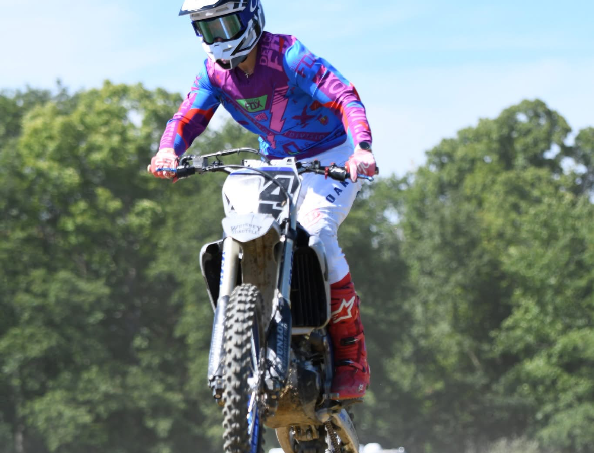

#4 · KYLE HANN

KYLE HANN · IN THE AIR
Built this workshop with his brain. Real photo — no AI rider.
OEM / race-proven fluids & parts for the 2022 YZ250F — Yamalube FS, genuine filters, NGK, Maxima. No bargain no-name junk.
Built with his brain by Kyle Hann · 2022 YZ250F · #4

KYLE HANN · IN THE AIR
Built this workshop with his brain. Real photo — no AI rider.